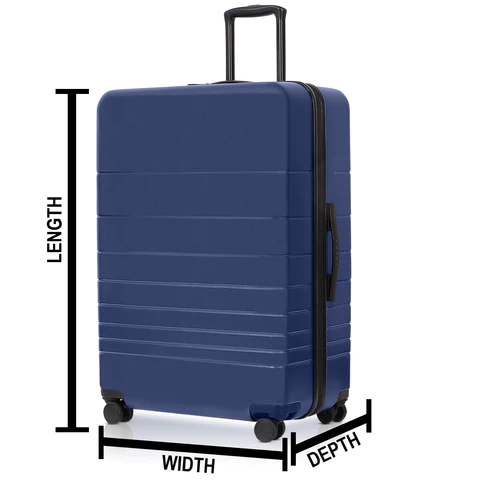
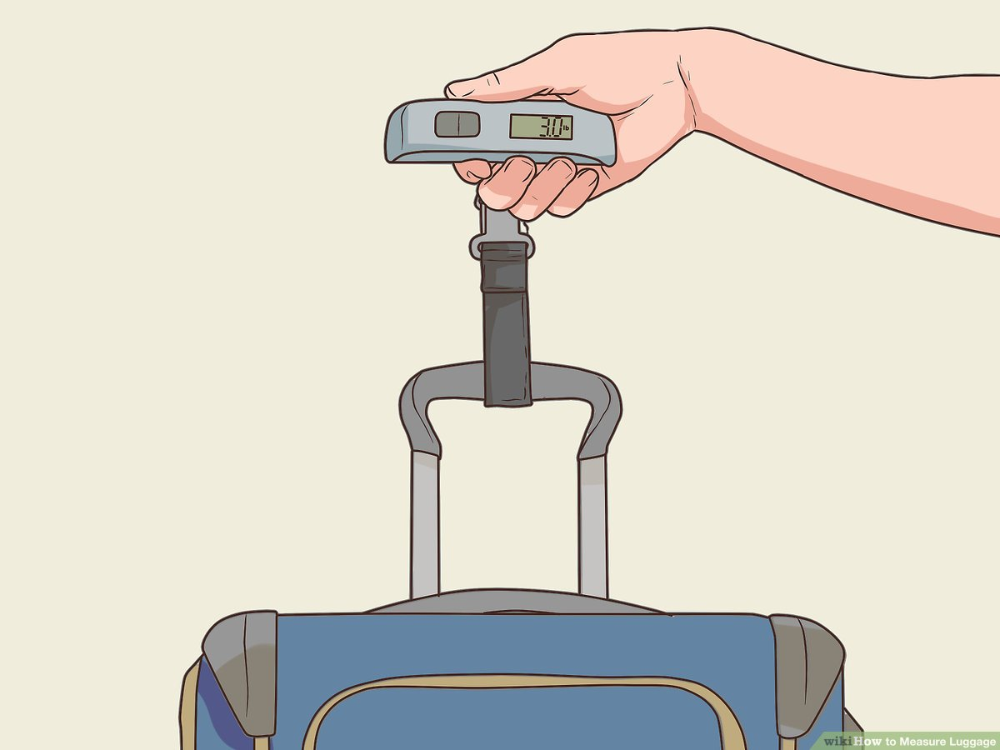

Measuring Dimensions
Follow these steps to accurately measure the dimensions of your luggage:
Step 1: Measure the Length
Place the luggage standing upright. Measure from the bottom to the top of the bag, including wheels and handle.
Step 2: Measure the Width
Measure the widest part of the luggage from left to right.
Step 3: Measure the Depth
Measure the depth of the luggage from the back panel to the front, including any exterior pockets or pouches.
Weighing Your Luggage
To ensure your luggage meets airline requirements, it's important to weigh it:
Using a Luggage Scale
Attach the scale to the handle of your luggage and lift it. Ensure the luggage is suspended in the air for an accurate reading.
Alternative Methods
If you don't have a luggage scale, you can use a regular bathroom scale. First, weigh yourself, then weigh yourself holding the luggage. Subtract your weight from the combined weight to get the weight of the luggage.